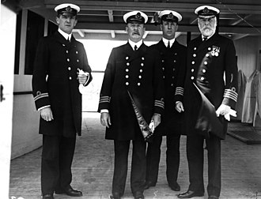

Edward John Smith (27 January 1850 – 15 April 1912) was a British naval officer. He served as master of numerous White Star Line vessels. He was the captain of the RMS Titanic, and perished when the ship sank on its maiden voyage.
Edward's Smith life
Edward John Smith was born on 27 January 1850 on Well Street, Hanley, Staffordshire,England to Edward Smith, a potter, and Catherine Hancock, born Marsh, who married on 2 August 1841 in Shelton, Staffordshire. His parents later owned a shop. Smith attended the Etruria British School until the age of 13 when he left and operated a steam hammer at the Etruria Forge. In 1867, aged 17 he went to Liverpool in the footsteps of his half-brother Joseph Hancock, a captain on a sailing ship. He began his apprenticeship on Senator Weber, owned by A Gibson & Co. of Liverpool. On 13 January 1887, Smith married Sarah Eleanor Pennington at St Oswald's Church, Winwick, Lancashire. Their daughter, Helen Melville Smith, was born in Waterloo, Liverpool on 2 April 1898. The family lived in a red brick, twin-gabled house, named "Woodhead", on Winn Road, Highfield, Southampton, Hampshire.
Edward Smith's career
Early Commands
Edward Smith joined the White Star Line in March 1880 as the Fourth Officer of SS Celtic. He served aboard the company's liners to Australia and to New York City, where he quickly rose in status. In 1887, he received his first White Star command, the Republic. In 1888, Smith earned his Extra Master's Certificate and joined the Royal Naval Reserve, receiving a commission as a Lieutenant, which entitled him to add the letters "RNR" after his name. This meant that in a time of war he could be called upon to serve in the Royal Navy. Smith retired from the RNR in 1905 with the rank of Commander. His ship had the distinction of being able to fly the Blue Ensign of the RNR; British merchant vessels generally flew the Red Ensign.
Bigger commands

Smith was Majestic's captain for nine years commencing in 1895. When the Boer War started in 1899, Majestic was called upon to transport troops to Cape Colony. Smith made two trips to South Africa, both without incident, and in 1903, for his service, King Edward VII awarded him the Transport Medal, showing the "South Africa" clasp. Smith was regarded as a "safe captain". As he rose in seniority, he gained a following amongst passengers with some only sailing the Atlantic on a ship he captained. Smith even became known as the "Millionaires' Captain". From 1904 on, Smith commanded the White Star Line's newest ships on their maiden voyages. In 1904, he was given command of what was then the largest ship in the world, the Baltic. Her maiden voyage from Liverpool to New York, sailing 29 June 1904, went without incident. After three years with Baltic, Smith was given his second new "big ship," the Adriatic. Once again, the maiden voyage went without incident. During his command of Adriatic, Smith received the long service Decoration for Officers of the Royal Naval Reserve (RD). As one of the world's most experienced sea captains, Smith was called upon to take first command of the lead ship in a new class of ocean liners, the Olympic – again, the largest vessel in the world at that time. The maiden voyage from Southampton to New York was successfully concluded on 21 June 1911, but as the ship was docking in New York harbour, a small incident took place. Docking at Pier 59 under the command of Captain Smith with the assistance of a harbour pilot, Olympic was being assisted by twelve tugs when one got caught in the backwash of Olympic, spun around, collided with the bigger ship, and for a moment was trapped under Olympic's stern, finally managing to work free and limp to the docks.
The sinking of RMS Titanic-the death of two legends
Despite the past trouble, Smith was again appointed to command the newest ship in the Olympic class when the RMS Titanic left Southampton for her maiden voyage. Although some sources state that he had decided to retire after completing Titanic's maiden voyage, an article in the Halifax Morning Chronicle on 9 April 1912 stated that Smith would remain in charge of Titanic "until the Company (White Star Line) completed a larger and finer steamer."
On 10 April 1912, Smith came aboard Titanic at 7 am to prepare for the Board of Trade muster at 8:00 am. He immediately went to his cabin to get the sailing report from Chief Officer Henry Wilde. After departure at noon, the huge amount of water displaced by Titanic as she passed caused the laid-up New York to break from her moorings and swing towards Titanic. Quick action from Smith helped to avert a premature end to the maiden voyage.he first four days of the voyage passed without incident, but on 14 April 1912, Titanic's radio operators received six messages from other ships warning of drifting ice, which passengers on Titanic had begun to notice during the afternoon.
Although the crew was thus aware of ice in the vicinity, they did not reduce the ship's speed and continued to steam at 22 knots (41 km/h; 25 mph), only 2 knots (3.7 km/h; 2.3 mph) short of her maximum speed of 24 knots (44 km/h; 28 mph). Titanic's high speed in waters where ice had been reported was later criticised as reckless, but it reflected standard maritime practice at the time. According to Fifth Officer Harold Lowe, the custom was "to go ahead and depend upon the lookouts in the crow's nest and the watch on the bridge to pick up the ice in time to avoid hitting it".
The North Atlantic liners prioritised time-keeping above all other considerations, sticking rigidly to a schedule that would guarantee arrival at an advertised time. They were frequently driven at close to their full speed, treating hazard warnings as advisories rather than calls to action. It was widely believed that ice posed little risk; close calls were not uncommon, and even head-on collisions had not been disastrous. In 1907, SS Kronprinz Wilhelm, a German liner, had rammed an iceberg and suffered a crushed bow, but was still able to complete her voyage. That same year, Titanic's future captain, Edward Smith, declared in an interview that he could not "imagine any condition which would cause a ship to founder. Modern shipbuilding has gone beyond that."
Shortly after 11:40 p.m. on 14 April, Smith was informed by First Officer William Murdoch that the ship had just collided with an iceberg. It was soon apparent that the ship was seriously damaged; designer Thomas Andrews reported that all of the first five of the ship's watertight compartments had been breached and that Titanic would sink in under two hours.
There are conflicting reports about Smith's actions during the evacuation. Some say that he did all in his power to prevent panic and did his best to assist in the evacuation; Major Arthur Godfrey Peuchen of the Royal Canadian Yacht Club said "He was doing everything in his power to get women in these boats, and to see that they were lowered properly. I thought he was doing his duty in regard to the lowering of the boats".Robert Williams Daniel, a first class passenger, also said:
Captain Smith was the biggest hero I ever saw. He stood on the bridge and shouted through a megaphone, trying to make himself heard.
Other sources say that he was very ineffective and inactive in preventing loss of life. Captain Smith was an experienced seaman who had served for 40 years at sea, including 27 years in command. This was the first crisis of his career, and he would have known that even if all the boats were fully occupied, more than a thousand people would remain on the ship as she went down, with little or no chance of survival. As Smith began to grasp the enormity of what was about to happen, he appears to have become paralysed by indecision. He had ordered passengers and crew to muster, but from that point onward, he failed to order his officers to put the passengers into the lifeboats; he did not adequately organise the crew; he failed to convey crucial information to his officers and crew; he sometimes gave ambiguous or impractical orders and he never gave the command to abandon ship. Even some of his bridge officers were unaware for some time after the collision that the ship was sinking; Fourth Officer Joseph Boxhall did not find out until 01:15, barely an hour before the ship went down, while Quartermaster George Rowe was so unaware of the emergency that after the evacuation had started, he phoned the bridge from his watch station to ask why he had just seen a lifeboat go past. Smith did not inform his officers that the ship did not have enough lifeboats to save everyone. He did not supervise the loading of the lifeboats and seemingly made no effort to find out if his orders were being followed.
Just minutes before the ship started its final plunge, Smith was still busy releasing Titanic's crew from their duties; he went to the Marconi operators room and released Junior Marconi Officer Harold Bride and senior wireless operator John "Jack" Phillips from their duties. He then carried out a final tour of the deck, telling crew members: "Now it's every man for himself." At 2:10 a.m., Steward Edward Brown saw the captain approach with a megaphone in his hand. He heard him say "Well boys, do your best for the women and children, and look out for yourselves." He saw the Captain walk onto the bridge alone. This was the last reliable sighting of Smith. A few minutes later Trimmer Samuel Hemming found the bridge apparently empty. Five minutes later, the ship disappeared beneath the ocean. Smith perished that night along with around 1,500 others, and his body was never recovered.
The sinking of RMS Titaic,April,15th,1912
There are conflicting accounts of Smith's death. Some survivors said they saw Smith enter the ship's wheelhouse on the bridge, and die there when it was engulfed. The New York Herald in its 19 April 1912 edition quoted Robert Williams Daniel, who jumped from the stern immediately before the ship sank, in its 19 April 1912 edition as having claimed to have witnessed Captain Smith drown in the ship's wheelhouse. "I saw Captain Smith on the bridge. My eyes seemingly clung to him. The deck from which I had leapt was immersed. The water had risen slowly, and was now to the floor of the bridge. Then it was to Captain Smith's waist. I saw him no more. He died a hero." Captain Smith himself made statements hinting that he would go down with his ship if he was ever confronted with a disaster. A friend of Smith's, Dr. Williams, asked Captain Smith what would happen if the Adriatic struck a concealed reef of ice and was badly damaged. "Some of us would go to the bottom with the ship," was Smith's reply. A boyhood friend, William Jones said, "Ted Smith passed away just as he would have loved to do. To stand on the bridge of his vessel and go down with her was characteristic of all his actions when we were boys together." Because of these factors, as well as accounts of Smith going inside the wheelhouse, this has remained the iconic image of Smith, perpetuated by film portrayals. When working to free Collapsible B, Junior Marconi Officer Harold Bride said he saw Captain Smith dive from the bridge into the sea just as Collapsible B was levered off the roof of the officers' quarters, a story corroborated by first class passenger Mrs Eleanor Widener, who was in Lifeboat No.4 (the closest to the sinking ship) at the time. Also second class passenger William John Mellors, who survived aboard Collapsible B, stated that Smith jumped from the bridge. Tim Maltin, author of 101 Things You Thought You Knew About The Titanic - But Didn't! affirms that the witnesses "could here be mistaking Captain Smith for Lightoller, who we know did exactly this at this time, first swimming towards the crow's nest."